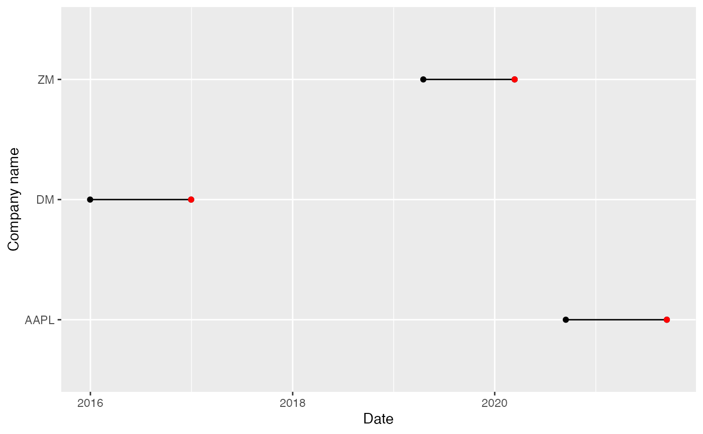
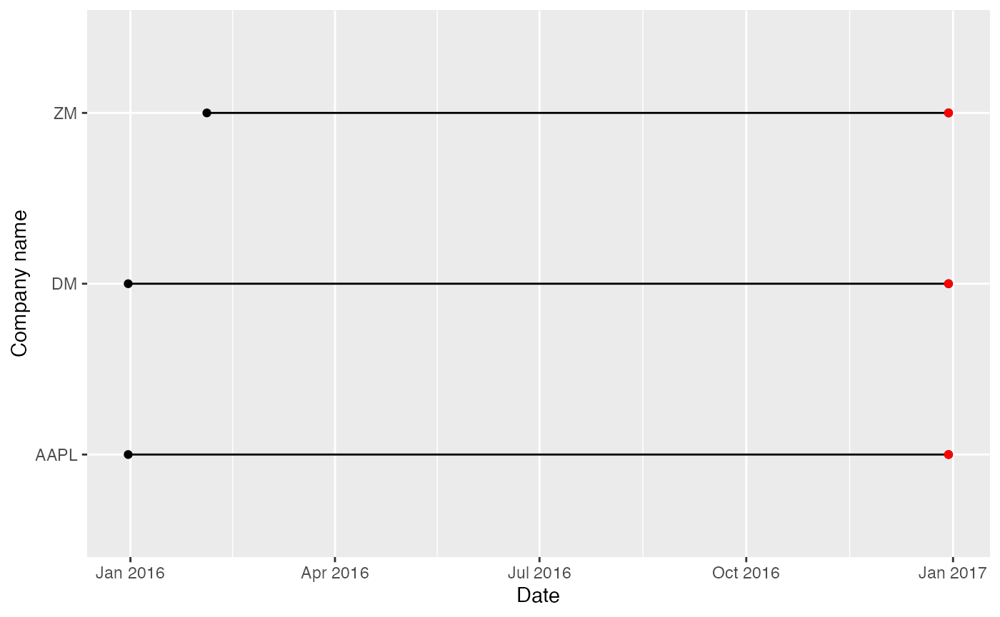

There are many research studies that analyze the effect of mergers and acquisitions (M&As) on the companies’ stock prices. The dates of such M&As vary for different companies. For instance, Coca-Cola acquired Fairlife on January 3, 2020, and PepsiCo acquired Rockstar Energy Drink on March 11, 2020. Unfortunately, as is, estudy2 does not analyze events that happened on different dates – the event dates have to match. In this short vignette, the workaround is shown.
The idea of such a workaround is to match the dates of event windows for all companies:
Define the event window in terms of dates. The easiest way is to fix the event window as the event window of one of the companies.
Shift all the dates for each company, so that the event windows coincide.
Perform the entire event study as if nothing is changed.
In this section, we will try to showcase the workaround mentioned above. For this, we will analyze the effect of three events that happened on different dates. For Apple Inc. (ticker: AAPL), the event day is fixed for September 14, 2021, when the new generation of iPhones was introduced. Further, we use March 13, 2020, for Zoom Video Communications, Inc. (ticker: ZM), as the day when Covid-19 restrictions were imposed for the first time. Finally, for a pseudo-generated company Dummy (pseudo-ticker: DM), we randomly select December 30, 2016, as an event date.
Let’s load the necessary packages and define a named vector that would store the event dates for different companies.
# library(tidyverse)
library(ggplot2)
library(estudy2)
event_dates <- c(
ZM = as.Date("2020-03-13"),
AAPL = as.Date("2021-09-14"),
DM = as.Date("2016-12-30")
)Now it’s time to retrieve the prices for Apple, Inc. and Zoom Video Communications, Inc. for the selected period:
zm <- get_prices_from_tickers(
"ZM",
start = event_dates["ZM"] - 365,
end = event_dates["ZM"] + 1,
retclass = "data.frame"
)
aapl <- get_prices_from_tickers(
"AAPL",
start = event_dates["AAPL"] - 365,
end = event_dates["AAPL"] + 1,
retclass = "data.frame"
)To make the example complete, we generate arbitrary prices for a dummy company. Note that the format should match the format assumed by estudy2:
dm <- data.frame(
date = event_dates["DM"] - 0:365,
DM = rnorm(366, mean = 30, sd = 4)
)
dm <- dm[!(weekdays(dm$date) %in% c("Sunday", "Saturday")), ]
# dm <- dm %>%
# filter(!(weekdays(date) %in% c("Sunday", "Saturday")))To illustrate the issue, we demonstrate the timeframes of our three companies. As you can observe, the event dates do not match, as well as time frames do not overlap:
plot_data <- data.frame(
company_name = c("ZM", "ZM", "AAPL", "AAPL", "DM", "DM"),
date = c(
min(zm$date), max(zm$date),
min(aapl$date), max(aapl$date),
min(dm$date), max(dm$date)
)
)
events_df <- data.frame(date = event_dates, company_name = names(event_dates))
ggplot(plot_data, aes(x = date, y = company_name)) +
geom_line() +
geom_point() +
geom_point(data = events_df, color = "red") +
labs(x = "Date", y = "Company name")
Now we can start our workaround. First, we fix the event date on 2016-12-30, i.e., the event date of Dummy company (Step 1). Further, we need to compute the difference between the event date of Dummy and the event dates of other companies. These values will be used to adjust/shift the true dates of the time frames (Step 2):
zm_shift <- event_dates["ZM"] - event_dates["DM"]
aapl_shift <- event_dates["AAPL"] - event_dates["DM"]
# Shift the dates by the difference between the event date of DM and ZM
zm$adjusted_date <- zm$date - zm_shift
# zoom <- zoom %>%
# mutate(adjusted_date = date - zoom_shift)
# Shift the dates by the difference between the event date of DM and AAPL
aapl$adjusted_date <- aapl$date - aapl_shift
# aapl <- aapl %>%
# mutate(adjusted_date = date - aapl_shift)We verify that the time frames, as well as event dates, do match for three companies:
plot_data <- data.frame(
company_name = c("ZM", "ZM", "AAPL", "AAPL", "DM", "DM"),
date = c(
min(zm$adjusted_date), max(zm$adjusted_date),
min(aapl$adjusted_date), max(aapl$adjusted_date),
min(dm$date), max(dm$date)
)
)
events_df <- data.frame(
date = rep(event_dates["DM"], 3),
company_name = names(event_dates)
)
ggplot(plot_data, aes(x = date, y = company_name)) +
geom_line() +
geom_point() +
geom_point(data = events_df, color = "red") +
labs(x = "Date", y = "Company name")
We left with merging the data frames into one data frame, so that we can pass it further to estudy2 workflow:
prices <- merge(
x = dm,
y = zm[, c("adjusted_date", "ZM")],
by.x = "date",
by.y = "adjusted_date"
)
prices <- merge(
x = prices,
y = aapl[, c("adjusted_date", "AAPL")],
by.x = "date",
by.y = "adjusted_date"
)
# prices <- dm %>%
# left_join(y = zm %>% select(-date), by = c("date" = "adjusted_date")) %>%
# left_join(y = aapl %>% select(-date), by = c("date" = "adjusted_date")) %>%
# drop_na()Finally, we can use built-in estudy2 functions to perform the event study, acting as if nothing was changed:
rates <- get_rates_from_prices(
prices, quote = "Close", multi_day = TRUE, compounding = "continuous"
)
returns <- apply_market_model(
rates,
market_model = "mean_adj",
estimation_start = min(rates$date),
estimation_end = max(rates$date) - 1
)
parametric_tests(returns, event_dates["DM"], event_dates["DM"])
#> date weekday percentage mean bw_1980_stat bw_1980_signif
#> 1 2016-12-30 Friday 100 -0.02222861 -0.3094697
#> bw_1985_stat bw_1985_signif t_test_stat t_test_signif
#> 1 -0.3237947 -0.4245898There are some constraints to this approach. In our example, we used a 1-day event window. With very slight modifications, it is possible to extend to multiple days. However, the size/length of the event window should match for different companies.
Second, if events happened on different weekdays (i.e., one event happened on Monday, the other one happened on Friday), we have mismatched weekends. This yields a significant reduction in the sample size.